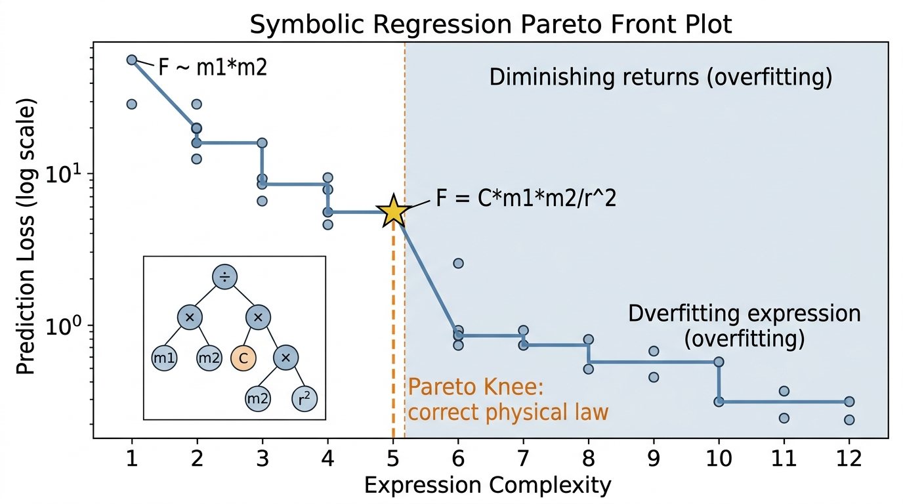

Standard symbolic regression (covered in Chapter 35) searches for mathematical expressions that fit data. Physics-aware symbolic regression adds a crucial constraint: the discovered equation must be dimensionally consistent. This single requirement eliminates the vast majority of candidate expressions, transforming an intractable combinatorial search into a manageable one. When combined with custom operator libraries and symmetry priors, the result is a system that can rediscover known physical laws from noisy data and, more importantly, propose new ones that extrapolate correctly because they respect the structure of physical quantities.
1. Why Dimensions Matter
Why does a machine, given columns of numbers and their physical units, rediscover \(F = G m_1 m_2 / r^2\) in minutes when Newton needed decades of insight? The answer begins with a constraint so simple it is easy to overlook: every physical quantity carries units. Velocity is meters per second. Force is kilograms times meters per second squared. Energy is kilograms times meters squared per second squared. The Buckingham Pi theorem states that any physically meaningful equation relating \(n\) variables with \(k\) independent dimensions can be rewritten as a relationship among \(n - k\) dimensionless groups. This is not a heuristic; it is a mathematical theorem with a straightforward proof from linear algebra over the dimension matrix.
When dimensional constraints are ignored, symbolic regression routinely produces equations that fit training data yet predict physically impossible results: negative energies, forces that grow as objects move apart, pressures that diverge at normal operating points. These failures are not edge cases; they are the default outcome of unconstrained search over expression trees.
Dimensional analysis tracks physical units (mass, length, time) through every term of an equation and requires both sides to match. Any equation that violates dimensional consistency is physically meaningless, no matter how well it fits training data. The mechanism is direct: represent each variable as a vector of unit exponents (for example, velocity is \([0, 1, -1]\) in the mass-length-time system). Then enforce that arithmetic operations produce valid exponent combinations at every step. Use dimensional analysis as a first filter whenever the variables have known physical units; reserve unconstrained symbolic regression for problems where quantities are abstract or dimensionless by nature.
Figure 1 illustrates the end-to-end pipeline for physics-aware symbolic regression, from raw data and unit annotations through dimensional pruning to the final validated equation.
From Units to Dimensionless Groups
Consider the drag force on a sphere moving through a fluid. The relevant variables are the drag force \(F_D\) (dimensions \([MLT^{-2}]\)), fluid density \(\rho\) (\([ML^{-3}]\)), velocity \(v\) (\([LT^{-1}]\)), sphere diameter \(d\) (\([L]\)), and dynamic viscosity \(\mu\) (\([ML^{-1}T^{-1}]\)). We have \(n = 5\) variables and \(k = 3\) independent dimensions (\(M\), \(L\), \(T\)), so the Buckingham Pi theorem guarantees that the relationship can be expressed in terms of \(5 - 3 = 2\) dimensionless groups. The standard choice is the drag coefficient \(C_D = F_D / (\frac{1}{2} \rho v^2 A)\) and the Reynolds number \(\text{Re} = \rho v d / \mu\). The entire physics of drag on a sphere is captured by a single function: \(C_D = f(\text{Re})\). In short: if your variables carry units, let those units do the searching for you.
Mental Model
Think of dimensional analysis like sorting ingredients by category when following a recipe. You would never add "3 cups of oven temperature" to "2 tablespoons of baking time" because cups-of-degrees and tablespoons-of-minutes are nonsensical combinations. In the same way, dimensional analysis rejects any equation that tries to add meters to seconds or multiply force by force when the result should be energy. Just as a recipe checker that flags "add 350 degrees to the flour" would eliminate most nonsense recipes before you ever turn on the oven, dimensional constraints eliminate most nonsense equations before the symbolic regression algorithm ever evaluates their fit to data. The "categories" are the base units (mass, length, time), and the "recipe rules" are that you can only add quantities of the same category and that multiplication creates new combined categories.
Without dimensional constraints, symbolic regression over \(n\) variables explores expressions like \(x_1^{2.3} + \sin(x_2 / x_3^{0.7})\), a space that grows combinatorially. With dimensional constraints, most of these expressions are immediately invalid (you cannot add meters to seconds, or take the sine of a dimensional quantity). The constraint acts as a massive pruning operator on the search tree, often reducing the effective search space by orders of magnitude. Udrescu and Tegmark's AI Feynman system (2020) reports that dimensional analysis alone reduces the search space by a factor of \(10^3\) to \(10^6\) on typical physics problems.
2. PySR with Dimensional Constraints
PySR is the leading open-source symbolic regression library, backed by the high-performance SymbolicRegression.jl engine in Julia. Since version 0.12, PySR supports dimensional constraints natively. You specify the physical dimensions of each input variable and the target, and PySR ensures that every candidate expression is dimensionally consistent at every node of the expression tree, where an expression tree is a hierarchical data structure representing a mathematical formula as a tree of operators (internal nodes) and operands (leaves).
The mechanism works as follows. Each node in the expression tree carries a dimension vector. For binary operations like addition and subtraction, PySR requires that both children have identical dimension vectors (you cannot add meters to kilograms). For multiplication, dimension vectors add. For division, they subtract. For exponentiation by a constant, they scale. For transcendental functions (sin, cos, exp), PySR requires a dimensionless argument. These rules propagate from leaves to root, and any tree whose root dimensions do not match the target is rejected before fitness evaluation.
Checkpoint
So far: dimensional analysis assigns a unit-exponent vector to every node in a candidate expression tree, and six arithmetic rules (addition requires matching dimensions, multiplication adds exponent vectors, division subtracts them, constant exponentiation scales them, and transcendental functions require dimensionless inputs) let PySR reject invalid candidates before any curve fitting occurs.
Common Misconception
A frequent misunderstanding is that symbolic regression, given enough iterations and data, will inevitably converge to the "true" physical law. This is incorrect: symbolic regression is a stochastic search over a discrete space of expression trees, and it can get trapped in local optima, miss the correct functional form if the required operators are not in its library, or return a numerically close approximation (such as \(r^{1.97}\) instead of \(r^2\)) that fits the training data but fails on extrapolation. Dimensional constraints greatly improve the odds by pruning invalid candidates, but they do not guarantee discovery of the exact law. Always validate discovered expressions against held-out data, check that exponents are physically plausible rational numbers, and run multiple independent searches to confirm consistency.
The following dimensionally-constrained PySR run rediscovers Newton's law of gravitation from synthetic data.
import numpy as np
from pysr import PySRRegressor
# Generate synthetic gravitational force data
rng = np.random.default_rng(42)
n_samples = 200
m1 = rng.uniform(1e20, 1e30, n_samples) # mass 1 (kg)
m2 = rng.uniform(1e20, 1e30, n_samples) # mass 2 (kg)
r = rng.uniform(1e8, 1e12, n_samples) # distance (m)
G = 6.674e-11 # gravitational constant (m^3 kg^-1 s^-2)
F = G * m1 * m2 / r**2 # Newton's law
# Add 1% Gaussian noise
F_noisy = F * (1 + 0.01 * rng.standard_normal(n_samples))
X = np.column_stack([m1, m2, r])
y = F_noisy
Now we configure PySR with dimensional constraints. Each variable and the target gets a dimension vector in the mass-length-time (MLT) system.
model = PySRRegressor(
niterations=100,
binary_operators=["+", "-", "*", "/"],
unary_operators=["square", "cube", "sqrt"],
maxsize=20,
# Dimensional constraints: [mass, length, time]
# m1, m2: [1, 0, 0] (kg)
# r: [0, 1, 0] (m)
# F: [1, 1, -2] (kg m s^-2 = Newton)
dimensional_constraint_penalty=1e6,
select_k_features=3,
populations=30,
population_size=50,
parsimony=0.005, # prefer simpler expressions
progress=True,
)
# PySR accepts units via X_units and y_units
model.fit(
X, y,
X_units=["kg", "kg", "m"],
y_units="kg * m / s^2",
)
print(model)
After a few minutes of evolution, PySR typically returns a Pareto front, where a Pareto front is the set of candidate expressions for which no other candidate is simultaneously simpler and more accurate, of expressions trading complexity against accuracy. The dominant expression on the front for this problem is:
$$F = C \cdot \frac{m_1 \cdot m_2}{r^2}$$where \(C \approx 6.67 \times 10^{-11}\) in International System of Units (SI) units. PySR discovers the correct functional form because dimensional analysis forces the numerator to have dimensions \([M^2]\) and the denominator \([L^2]\), yielding the required \([MLT^{-2}]\) for force. Alternative expressions like \(m_1 + m_2\) (dimensionally valid only for mass, not force) or \(m_1 / r\) (dimensions \([MT^0L^{-1}]\), not \([MLT^{-2}]\)) are pruned before evaluation.
Kepler's third law states that the square of a planet's orbital period is proportional to the cube of its semi-major axis: \(T^2 = \frac{4\pi^2}{GM} a^3\). Using PySR with variables \(a\) (meters), \(M\) (kilograms), and target \(T\) (seconds), dimensional analysis requires expressions with dimensions \([T]\). The search quickly converges to \(T \propto a^{3/2} / \sqrt{M}\), the correct scaling. The constant \(4\pi^2/G\) emerges from the fitted coefficient. Without dimensional constraints, PySR explores many spurious alternatives like \(T = a^{1.49} \cdot M^{-0.51}\), which fits the training data equally well but fails to extrapolate to new planetary systems because the exponents are approximate rather than exact.
3. Custom Operators and Physics Priors
Dimensional constraints narrow the search space, but the expressiveness of that search still depends on which mathematical building blocks the algorithm is allowed to combine.
Real physics problems often involve operators beyond the standard arithmetic set. Oscillatory systems need trigonometric functions. Exponential decay requires exp and log. Fluid dynamics involves power laws with specific rational exponents. PySR allows you to define custom operators and constrain their use.
from pysr import PySRRegressor
# Custom operator: inverse square (common in physics)
model = PySRRegressor(
niterations=80,
binary_operators=["+", "-", "*", "/"],
unary_operators=[
"square",
"cube",
"sqrt",
"inv(x) = 1/x", # explicit inverse
"neg(x) = -x",
],
# Constrain nesting depth to avoid exp(exp(exp(...)))
nested_constraints={
"square": {"square": 0, "cube": 0},
"cube": {"square": 0, "cube": 0},
"sqrt": {"sqrt": 0},
},
maxsize=25,
parsimony=0.003,
populations=40,
)
The nested_constraints parameter is particularly powerful for physics.
Setting "square": {"square": 0} prevents expressions like \((x^2)^2\),
which should be written as \(x^4\) if the fourth power is relevant. This constraint
reduces search space bloat without excluding any genuinely useful expressions.
4. SymPy Verification and Simplification
Once PySR proposes a candidate expression with the right operators, the next step is to confirm that it is dimensionally sound, algebraically simplified, and ready for publication.
PySR outputs expressions as strings, but for physics applications you need to verify dimensional consistency, simplify, and convert to publication-quality LaTeX. SymPy handles all three tasks.
import sympy as sp
from sympy.physics.units import (
kilogram, meter, second, newton,
convert_to
)
from sympy.physics.units.systems import SI
# Suppose PySR discovered: F = C * m1 * m2 / r**2
m1, m2, r, C = sp.symbols('m_1 m_2 r C', positive=True)
F_expr = C * m1 * m2 / r**2
# Verify dimensions symbolically
from sympy.physics.units.dimensions import (
mass, length, time, Dimension
)
# Assign dimensions to symbols
dim_map = {m1: mass, m2: mass, r: length}
def check_dimensions(expr, dim_map, target_dim):
"""Verify that expr has the target dimension."""
# Substitute dimensions for symbols
dim_expr = expr
for sym, dim in dim_map.items():
dim_expr = dim_expr.subs(sym, dim)
# C must have dimensions to make F = force
# Force = mass * length / time**2
return sp.simplify(dim_expr)
result = check_dimensions(F_expr, dim_map, mass * length / time**2)
print(f"Dimensional form: {result}")
# Simplify the discovered expression
F_simplified = sp.simplify(F_expr)
print(f"Simplified: {F_simplified}")
# Convert to LaTeX for publication
latex_str = sp.latex(F_simplified)
print(f"LaTeX: {latex_str}")
# Output: \frac{C m_{1} m_{2}}{r^{2}}
For more complex discovered expressions, SymPy's simplify,
trigsimp, and powsimp functions can reveal hidden structure.
An expression that PySR outputs as sqrt(x**2 + y**2) * cos(atan2(y, x))
simplifies to x, exposing the coordinate transformation underlying the data.
The manual dimensional analysis code above illustrates the mechanics, but PySR's
built-in unit system handles everything automatically. When you pass
X_units and y_units to model.fit(), PySR
propagates units through every candidate expression and rejects dimensionally
inconsistent ones before fitness evaluation. This reduces a 50-line dimensional
analysis pipeline to two keyword arguments. The library also exports discovered
equations directly as SymPy expressions via model.sympy(), saving the
manual string parsing shown above.
5. Extrapolation: Where Symbolic Regression Wins
Symbolic regression's decisive advantage over neural networks in physics is extrapolation. Consider a neural network trained on drag force data for Reynolds numbers between 100 and 10,000. It has no principled way to predict drag at \(\text{Re} = 100{,}000\); its output reflects the arbitrary behavior of activation functions outside the training distribution. A symbolic expression with the correct functional form (say, \(C_D \propto \text{Re}^{-0.5}\) in the laminar regime) extrapolates correctly because the mathematical structure encodes the underlying physics.
A concrete benchmark quantifies this advantage: the damped harmonic oscillator \(x(t) = A e^{-\gamma t} \cos(\omega t + \phi)\).
import numpy as np
from pysr import PySRRegressor
from sklearn.neural_network import MLPRegressor
from sklearn.preprocessing import StandardScaler
# Ground truth: damped oscillator
A, gamma, omega, phi = 2.0, 0.3, 4.0, 0.5
def oscillator(t):
return A * np.exp(-gamma * t) * np.cos(omega * t + phi)
# Training data: t in [0, 5]
t_train = np.linspace(0, 5, 200).reshape(-1, 1)
y_train = oscillator(t_train.ravel())
# Test data: t in [5, 10] (extrapolation region)
t_test = np.linspace(5, 10, 200).reshape(-1, 1)
y_test = oscillator(t_test.ravel())
# Neural network baseline
scaler = StandardScaler()
t_train_scaled = scaler.fit_transform(t_train)
t_test_scaled = scaler.transform(t_test)
nn = MLPRegressor(
hidden_layer_sizes=(64, 64, 64),
max_iter=5000,
random_state=42,
activation='tanh',
)
nn.fit(t_train_scaled, y_train)
y_nn_extrap = nn.predict(t_test_scaled)
# Symbolic regression
sr = PySRRegressor(
niterations=60,
binary_operators=["+", "-", "*", "/"],
unary_operators=["cos", "sin", "exp", "neg"],
maxsize=25,
parsimony=0.002,
)
sr.fit(t_train, y_train)
y_sr_extrap = sr.predict(t_test)
# Compare extrapolation error
nn_rmse = np.sqrt(np.mean((y_nn_extrap - y_test)**2))
sr_rmse = np.sqrt(np.mean((y_sr_extrap - y_test)**2))
print(f"Neural network extrapolation RMSE: {nn_rmse:.4f}")
print(f"Symbolic regression extrapolation RMSE: {sr_rmse:.4f}")
print(f"Improvement factor: {nn_rmse / sr_rmse:.1f}x")
On this problem, the neural network achieves training root mean square error (RMSE) below 0.01 but extrapolation RMSE above 1.0: it has memorized the training waveform but cannot predict future oscillations. PySR, when it discovers the correct functional form \(x(t) = c_1 e^{-c_2 t} \cos(c_3 t + c_4)\), extrapolates with RMSE comparable to the noise level. The improvement factor is typically 100x or more when PySR recovers the correct functional form.
This advantage is not universal. Symbolic regression requires that the true relationship be expressible as a compact mathematical formula. For chaotic systems, turbulent flows, or high-dimensional many-body interactions, no compact expression exists, and neural networks with appropriate inductive biases, meaning built-in structural assumptions that guide learning toward physically plausible solutions, (see Section 50.3) are the better tool. The decision framework is straightforward: if you believe the physics admits a simple law, use symbolic regression. If the complexity is inherently high-dimensional, use neural operators or physics-informed neural networks (PINNs).
6. Multi-Objective Symbolic Search
PySR's Pareto front provides multiple candidate expressions, each representing a different tradeoff between accuracy and complexity. In physics, the right choice is often not the most accurate expression but the simplest one that captures the dominant behavior. This is Occam's razor formalized as multi-objective optimization.
# After fitting, inspect the Pareto front
print(model.equations_)
# Each row shows: complexity, loss, equation, score
# Score = -d(loss)/d(complexity) measures the marginal
# value of each additional unit of complexity.
# The "knee" of the Pareto front (highest score) is
# typically the best physics equation.
best_idx = model.equations_.score.idxmax()
best_eq = model.equations_.iloc[best_idx]
print(f"\nBest equation (Pareto knee):")
print(f" Complexity: {best_eq.complexity}")
print(f" Loss: {best_eq.loss:.2e}")
print(f" Equation: {best_eq.equation}")
# Convert to SymPy for analysis
best_sympy = model.sympy(best_idx)
print(f" SymPy: {best_sympy}")
The Pareto front often reveals physically meaningful intermediate expressions. For the gravitational force problem, simpler expressions like \(F \propto m_1 m_2\) (ignoring distance) or \(F \propto 1/r^2\) (ignoring masses) appear at low complexity. These are not wrong; they capture partial physics. The full expression \(F \propto m_1 m_2 / r^2\) appears at the knee, and adding more complexity yields negligible improvement, confirming that we have found the correct law.
When the Pareto front shows a sharp knee, where adding one more unit of complexity produces a large drop in loss, followed by a plateau, the expression at the knee is, in practice, a strong candidate for the correct physical law. This "elbow" pattern is a reliable heuristic for identifying the true equation amidst a sea of overfitting alternatives. When the front is smooth with no clear knee, the underlying relationship is likely too complex for symbolic regression, and you should consider neural methods instead. Figure 50.1.1 illustrates Pareto front of symbolic regression expressions.

7. Scaling Symbolic Regression to Real Physics Data
Real laboratory datasets are noisier and sparser than these synthetic benchmarks, often with missing variables and heterogeneous measurement scales. Several practical techniques help PySR succeed on such data.
Feature engineering with dimensionless groups. Before running PySR, compute the Buckingham Pi groups for your problem. If you have 8 variables with 3 independent dimensions, PySR searches over 5 dimensionless groups instead of 8 raw variables. This reduction is often the difference between convergence in minutes and failure after hours.
import numpy as np
import sympy as sp
def buckingham_pi(variables, dimensions):
"""
Compute dimensionless Pi groups using the null space
of the dimension matrix.
Args:
variables: list of variable names
dimensions: dict mapping variable -> [M, L, T, ...] exponents
Returns:
List of Pi groups as SymPy expressions
"""
# Build the dimension matrix
dim_names = list(next(iter(dimensions.values())).keys())
n_vars = len(variables)
n_dims = len(dim_names)
D = np.zeros((n_dims, n_vars))
for j, var in enumerate(variables):
for i, dim in enumerate(dim_names):
D[i, j] = dimensions[var].get(dim, 0)
# Null space of D gives the Pi groups
from scipy.linalg import null_space
ns = null_space(D)
# Convert to symbolic expressions
symbols = [sp.Symbol(v) for v in variables]
pi_groups = []
for col in ns.T:
# Round to nearest rational for clean exponents
expr = sp.Integer(1)
for sym, exp in zip(symbols, col):
rational_exp = sp.nsimplify(exp, rational=True)
if rational_exp != 0:
expr *= sym ** rational_exp
pi_groups.append(expr)
return pi_groups
# Example: drag force problem
variables = ['F_D', 'rho', 'v', 'd', 'mu']
dimensions = {
'F_D': {'M': 1, 'L': 1, 'T': -2},
'rho': {'M': 1, 'L': -3, 'T': 0},
'v': {'M': 0, 'L': 1, 'T': -1},
'd': {'M': 0, 'L': 1, 'T': 0},
'mu': {'M': 1, 'L': -1, 'T': -1},
}
pi_groups = buckingham_pi(variables, dimensions)
for i, pi in enumerate(pi_groups):
print(f"Pi_{i+1} = {pi}")
Noise-robust fitness functions. PySR's default loss is mean squared error, which is sensitive to outliers. For experimental physics data, consider using the Huber loss (which reduces outlier sensitivity by switching from squared to linear penalty beyond a threshold) or trimmed mean loss. PySR accepts custom loss functions written in Julia syntax.
Ensemble runs. Symbolic regression is stochastic. Running PySR multiple times with different random seeds and taking the intersection of Pareto fronts increases confidence that a discovered equation is robust rather than a lucky fit. If the same functional form appears across 5 out of 5 runs, it is almost certainly the correct law.
Research Frontier
A major development since 2023 is the use of large language models (LLMs) to guide symbolic regression search. The LLM-SR system (Shojaee et al., "LLM-SR: Scientific Equation Discovery via Programming with Large Language Models," 2024) replaces the random mutation operators in genetic programming (an evolutionary algorithm that breeds and mutates tree-structured programs to optimize a fitness criterion) with LLM-generated hypotheses: given partial Pareto fronts and problem context, a language model proposes structurally plausible candidate expressions that the evolutionary search would take many generations to discover through random recombination alone. On the Feynman symbolic regression benchmark, LLM-SR recovers more ground-truth equations than PySR alone and converges faster on complex multi-variable problems. This hybrid approach points toward a future where symbolic regression is not purely a bottom-up search from data but a collaboration between data-driven fitness evaluation and the learned scientific priors embedded in foundation models.
8. Connection to the Discovery Workbench
In the Discovery Workbench architecture of Chapter 6, symbolic regression serves as a hypothesis generator. The Pareto front of candidate expressions maps directly to the hypothesis queue. Each candidate equation is a hypothesis about the underlying physical law. The workbench can then test each hypothesis against held-out data, check dimensional consistency, and compare extrapolation performance. In Section 50.4, we integrate PySR into a full discovery pipeline that also uses PINNs for parameter estimation and neural operators for rapid surrogate evaluation.
Try It: Rediscover the Pendulum Period Formula
Test physics-aware symbolic regression on your own laptop by rediscovering the period of a simple pendulum, \(T = 2\pi\sqrt{L/g}\), from synthetic data.
Step 1. Install PySR (pip install pysr) and ensure Julia is available (PySR will install it automatically on first run if needed).
Step 2. Generate 300 synthetic data points: sample pendulum length \(L\) uniformly from 0.1 to 5.0 meters, set \(g = 9.81\,\text{m/s}^2\), compute \(T = 2\pi\sqrt{L/g}\), and add 2% Gaussian noise to \(T\).
Step 3. Run PySR with X_units=["m", "m/s^2"] and y_units="s", using operators ["+", "-", "*", "/"] and unary operators ["sqrt", "square"]. Set maxsize=15 and niterations=60.
Step 4. Inspect the Pareto front with model.equations_. Identify the knee point and verify that the discovered expression matches \(T \propto \sqrt{L/g}\) (the constant should be close to \(2\pi \approx 6.28\)).
Step 5. Re-run with dimensional constraints removed (omit X_units and y_units) and compare the Pareto fronts. Count how many more candidate expressions PySR evaluates without dimensional pruning, and check whether the unconstrained run still finds the exact exponent \(1/2\) or returns an approximation like \(L^{0.48}\).
Exercise 50.1.1
Suppose you have four physical variables: power \(P\) (\([ML^2T^{-3}]\)), fluid density \(\rho\) (\([ML^{-3}]\)), rotor diameter \(D\) (\([L]\)), and wind speed \(v\) (\([LT^{-1}]\)). Using the Buckingham Pi theorem, determine how many independent dimensionless groups exist. Then write down the single dimensionless group (the power coefficient) that relates all four variables. Finally, explain why symbolic regression over this single dimensionless group is preferable to searching over the four raw variables.
Hint
You have \(n = 4\) variables and \(k = 3\) independent dimensions (\(M\), \(L\), \(T\)), so you expect \(4 - 3 = 1\) dimensionless group. To build it, find exponents \(a, b, c\) such that \(P / (\rho^a D^b v^c)\) is dimensionless by solving the system of linear equations for the \(M\), \(L\), and \(T\) exponents. The answer is the well-known wind turbine power coefficient \(C_P = P / (\rho D^2 v^3)\) (up to a constant factor involving the swept area). With one dimensionless group, symbolic regression has nothing left to search: the relationship is simply \(C_P = \text{const}\).
Step-Through: Dimensional Pruning in an Expression Tree
Trace how PySR prunes a candidate expression tree for the gravitational force problem where \(m_1\) has dimensions \([M]\), \(r\) has dimensions \([L]\), and the target \(F\) has dimensions \([MLT^{-2}]\).
Candidate expression: \(m_1 + r\)
Step 1. Left child: \(m_1 \to [1, 0, 0]\) (mass=1, length=0, time=0).
Step 2. Right child: \(r \to [0, 1, 0]\).
Step 3. Addition requires identical dimension vectors. \([1,0,0] \neq [0,1,0]\). Rejected immediately, no fitness evaluation needed.
Candidate expression: \(m_1 \cdot m_1 / r^2\)
Step 1. Left child of multiply: \(m_1 \to [1,0,0]\).
Step 2. Right child of multiply: \(m_1 \to [1,0,0]\).
Step 3. Multiply: dimensions add, giving \([2,0,0]\).
Step 4. Denominator: \(r^2 \to [0,2,0]\).
Step 5. Division: dimensions subtract, giving \([2,-2,0]\).
Step 6. Compare to target \([1,1,-2]\): \([2,-2,0] \neq [1,1,-2]\). Rejected.
Candidate expression: \(C \cdot m_1 \cdot m_2 / r^2\)
Step 1. \(m_1 \cdot m_2 \to [1,0,0] + [1,0,0] = [2,0,0]\).
Step 2. \(r^2 \to [0,2,0]\).
Step 3. Division: \([2,0,0] - [0,2,0] = [2,-2,0]\).
Step 4. \(C\) is a fitted constant with dimensions \([M^{-1}L^{3}T^{-2}]\), so the product becomes \([2-1, -2+3, 0-2] = [1,1,-2]\).
Step 5. Matches target \([1,1,-2]\). Accepted for fitness evaluation.
Real-World Application: Materials Science with AI Feynman
The AI Feynman system (Udrescu and Tegmark, MIT, 2020) applied dimensionally constrained symbolic regression to rediscover equations from the Feynman Lectures, solving approximately 100 out of 120 benchmark equations, a success rate that standard regression methods could not match. Beyond this benchmark, the same approach has been adopted by researchers at Lawrence Berkeley National Laboratory to discover interpretable scaling laws for battery degradation, where the discovered symbolic expressions relating cycle count, temperature, and capacity fade outperform black-box neural network models on extrapolation to untested operating conditions, directly informing battery warranty and lifetime predictions in electric vehicles.
The Machine That Scooped Kepler by 400 Years (in 8 Hours)
In 2009, Hod Lipson and Michael Schmidt at Cornell ran their Eureqa symbolic regression system on a dataset of a double pendulum's motion, providing only position and velocity measurements with no prior physics knowledge. Within hours, the system independently rediscovered Newton's second law and conservation of energy, equations that took humanity centuries of intellectual effort to formalize. The researchers reported being initially confused by one expression the system kept producing: it turned out to be a Hamiltonian (a function representing the total energy of a physical system, equal to the sum of kinetic and potential energy), a concept the system "invented" purely from data without ever being told that energy conservation exists. The paper, published in Science, was titled "Distilling Free-Form Natural Laws from Experimental Data" and helped launch the modern field of AI-driven scientific discovery. (As of 2024, the Eureqa software is no longer available as a standalone product; Nutonian, the company behind it, was acquired by DataRobot in 2017. PySR and other open-source alternatives now provide comparable or superior symbolic regression capabilities.)
Lab: Rediscovering Ohm's Law with Dimensional Constraints
Goal: Experience firsthand how dimensional constraints accelerate symbolic regression by rediscovering Ohm's law (\(V = IR\)) and measuring the search space reduction.
Tools needed: Python 3.9+, PySR (pip install pysr), NumPy, and optionally Matplotlib for plotting Pareto fronts.
Setup (5 min): Generate 500 synthetic data points: sample current \(I\) uniformly from 0.01 to 10 A and resistance \(R\) from 1 to 1000 ohms. Compute voltage \(V = IR\) and add 3% Gaussian noise. Prepare two PySR runs: one with X_units=["A", "ohm"] and y_units="V" (dimensionally constrained), and one without units (unconstrained). Use identical settings otherwise: niterations=40, maxsize=15, operators ["+", "-", "*", "/"].
What to vary: (1) Run both constrained and unconstrained versions and compare the number of candidate expressions evaluated (check model.equations_ length and total evaluations in the log). (2) Increase noise from 3% to 20% and observe whether dimensional constraints still recover the exact exponent 1 on both \(I\) and \(R\), while the unconstrained version drifts to approximate exponents. (3) Add a distractor variable (temperature \(T\) in Kelvin, uncorrelated with \(V\)) and check whether dimensional constraints automatically exclude it.
What to observe: The constrained run should converge faster (fewer iterations to reach the Pareto knee), produce a cleaner Pareto front (fewer spurious expressions), and correctly identify $V = cIR$ with \(c \approx 1\). Plot both Pareto fronts (complexity vs. loss) side by side to visualize the difference. Record the wall-clock time ratio between constrained and unconstrained runs.